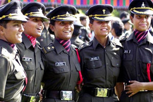

 The infusion of high technology based precision weaponry has enhanced the lethality of future warfare manifold. The spectrum of threat ranges from the nuclear to the conventional and the asymmetric, with terrorism emerging like a hydra-headed monster. Add to this the rigours of climate i.e. the glacial heights and extreme cold, dense mountainous jungles and the heat and simoom of the deserts. Such are the trying environs in which a soldier operates. However, to a soldier facing such challenges and going beyond the call of duty is but second nature. Life's turbulences and turmoils have a special flavour for him. For those not exposed to a war or war like environment, this flavour is beyond the realms of imagination. The Indian Army soldier is infused by a set of values that make the soldier willingly face a plethora of challenges and difficulties, and when the call may come, to give the ultimate sacrifice in the service of the Nation. The ethos of the Army is ingrained in all soldiers with an unwavering will to succeed, accepting their grave responsibility and an unbridled ability to give their lives for others; confident that in return the nation will look after them and their families. The values of the army infused in the soldier through the years of training are enumerated below.
The spirit of comradeship and brotherhood of the brave, regardless of caste, creed or religion. The motto is, "One for all and all for one"!
The tradition is never to question, but to do or die for the three "Ns"; Naam, i.e. name-honour- of the unit/Army/Nation, 'Namak'(salt) i.e. loyalty to the Nation, and 'Nishan', i.e. the insignia or flag of his unit/regiment/Army/Nation which the soldiers hold afloat willingly.
Fearlessness in combat and in the face of the enemy even when fighting against great odds or even when facing sure death.
The Indian Army does not discriminate on account of caste, creed or religion. A soldier is a soldier first and anything else later. He prays under a common roof. It is this unique character, which makes him bind in a team despite such diversity.
The spirit of honesty and fair play. He fights for a just cause that extends even to the enemy (prisoner or wounded).
Discipline and integrity impart the feeling of patriotism, honesty and courage under all circumstances, however strong be the provocation otherwise.
He is a man on whose shoulders lies the honour and integrity of his nation. He knows that he is the last line of defence and he cannot fail the Nation.
A close bond amongst soldiers forces them to choose death to dishonour. The concept of 'IZZAT' (HONOUR) in the clan / unit enables them to shun the fear of death; to be called a coward in the peer group is worse than death.
A soldier has to be forthright, for on his word the men he leads are going to lay down their lives without questioning why.
These values stoke the attitude of Service before Self in every soldier. The famous credo of Chetwode Hall is deeply imbibed in the men in Olive Green. It is the spirit of this credo, imbibed in every officer that binds him with his men in an unshakeable bond of camaraderie.